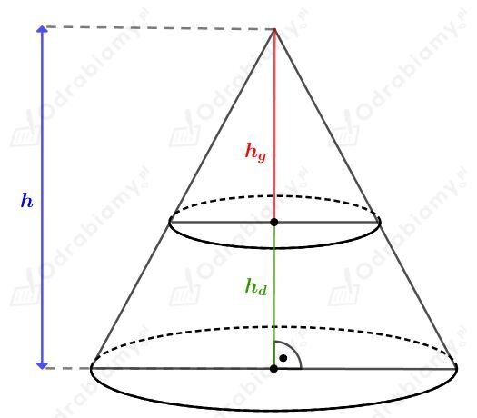
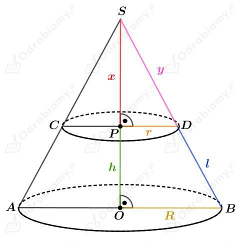
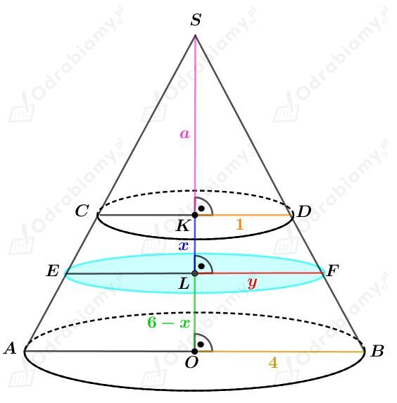
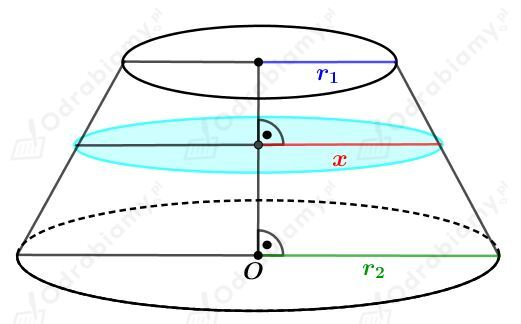

| Jeśli skala podobieństwa brył podobnych jest równa a:b, to
|
Dane są podobne ostrosłupy prawidłowe O1, O2, O3 i O4.
Niech h1, h2, h3, h4 będą długościami wysokości tych ostrosłupów.
Niech a1, a2, a3, a4 będą długościami krawędzi podstawy tych ostrosłupów.
Uzupełniona tabela:
| Ostrosłup | Wysokość | Krawędź podstawy | Pole podstawy | Objętość |
| | | | | |
| | | | | |
| | | | | |
| | | | | |
Wyjaśnienia:
1) Wyznaczmy skalę podobieństwa k ostrosłupów O2 i O1. Mamy:
Więc
Oraz dla pól mamy:
Dla objętości mamy:
2) Wyznaczmy skalę podobieństwa k ostrosłupów O3 i O1. Mamy:
Więc dla długości wysokości mamy:
Dla długości krawędzi mamy:
Oraz dla objętości mamy:
3) Wyznaczmy skalę podobieństwa k ostrosłupów O4 i O1. Mamy:
czyli
Więc dla długości wysokości mamy:
Dla długości krawędzi mamy:
Oraz dla pól mamy:
a)
Wyznaczmy skalę podobieństwa k ostrosłupów O1 i O2. Mamy:
Skala podobieństwa ostrosłupów O1 i O2 wynosi 2:3.
b)
Wyznaczmy skalę podobieństwa k ostrosłupów O1 i O3. Mamy:
Skala podobieństwa ostrosłupów O1 i O3 wynosi 1:2.
c)
Wyznaczmy skalę podobieństwa k ostrosłupów O2 i O3. Mamy:
Skala podobieństwa ostrosłupów O2 i O3 wynosi 3:4.
d)
Wyznaczmy skalę podobieństwa k ostrosłupów O3 i O4. Mamy:
Skala podobieństwa ostrosłupów O3 i O4 wynosi 4:1.
| Jeśli skala podobieństwa brył podobnych jest równa a:b, to
|
Dany jest ostrosłup i jego przekrój płaszczyzną równoległą do podstawy. Płaszczyzna ta podzieliła ostrosłup na dwie części.
Niech V będzie objętością całego ostrosłupa. Niech Vg będzie objętością górnej bryły, a Vd objętością dolnej bryły.
Szukamy stosunku objętości mniejszej (górnej) części do objętości większej (dolnej) części.
Wiemy, że
i stąd mamy:
a)
Niech k będzie skalą podobieństwa całego ostrosłupa do górnej części bryły. Mamy stąd
więc
Wyznaczmy stosunek objętości mniejszej części do objętości większej części. Mamy:
b)
Niech k będzie skalą podobieństwa całego ostrosłupa do górnej części bryły. Mamy stąd
więc
Wyznaczmy stosunek objętości mniejszej części do objętości większej części. Mamy:
c)
Niech k będzie skalą podobieństwa całego ostrosłupa do górnej części bryły. Mamy stąd
więc
Wyznaczmy stosunek objętości mniejszej części do objętości większej części. Mamy:
Rysunek:

Niech V będzie objętością całego stożka. Niech Vg będzie objętością górnej bryły, a Vd - objętością dolnej.
Wiemy, że stożek został podzielony na dwie bryły o równych objętościach. Zatem mamy
Zatem
A stąd otrzymujemy:
Wyznaczmy stosunek, w jakim płaszczyzna podzieliła wysokość tego stożka. Mamy:
Rysunek:

Zauważmy, że trójkąty SOB i SPD są podobne na mocy cechy podobieństwa kkk.
a)
Korzystając z podobieństwa trójkątów SOB i SPD mamy:
Wyznaczmy objętość całego stożka ABS. Mamy:
Wyznaczmy objętość stożka CDS. Mamy:
Wyznaczmy objętość stożka ściętego. Mamy:
Korzystając ze wzoru skróconego mnożenia na różnicę sześcianów mamy:
b)
Korzystając z podobieństwa trójkątów SOB i SPD mamy:
Wyznaczmy pole powierzchni bocznej całego stożka ABS. Mamy:
Wyznaczmy pole powierzchni bocznej stożka CDS. Mamy:
Wyznaczmy pole powierzchni bocznej stożka ściętego. Mamy:
Rysunek:

Korzystając z podobieństwa stożków ściętych otrzymujemy:
Korzystając z podobieństwa trójkątów SKD i SOB mamy:
Korzystając z podobieństwa trójkątów SKD i SLF mamy:
zatem
Wyznaczmy objętość stożka ściętego nad płaszczyzną podziału. Mamy:
Wyznaczmy objętość stożka ściętego pod płaszczyzną podziału. Mamy:
Rysunek:

Korzystając z podobieństwa stożków ściętych mamy:
Wyznaczmy skalę podobieństwa k tych stożków ściętych. Mamy: